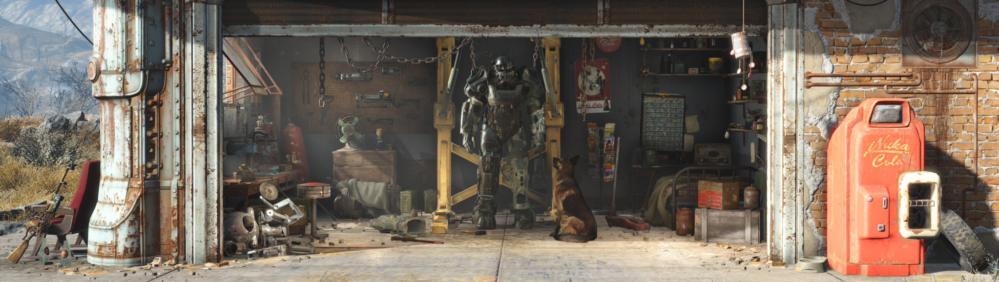
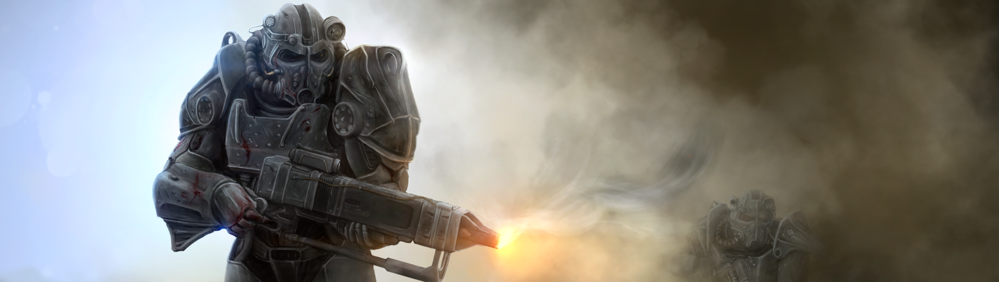
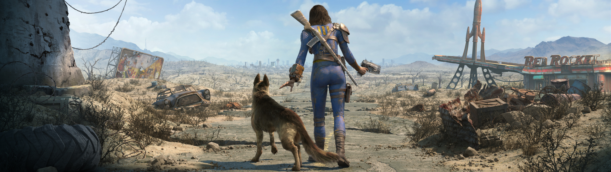

¡Bienvenido al yermo! Tierra radioactiva y salvaje que sirve de contexto para uno de los mejores juegos en lo que va de la generación: Fallout 4, un título que se percibe más como la evolución de la fórmula puesta en marcha por Bethesda en 2008 que como una simple secuela y el cual cumple con todas las expectativas sin llegar a ser precisamente perfecto, aunque sí un serio contendiente a Juego del Año.
Por si no lo conoces, Fallout es un RPG de acción cuya esencia yace en la exploración, el combate y la toma de decisiones en un mundo abierto. Fallout 4 conserva esos principios pero ahora añade personalización, crafteo y estrategia en una amalgama tan grande que ni siquiera sé bien por dónde empezar a describir.
Como de costumbre, arrancas al interior de la bóveda antibombas número 111, 200 años después del holocausto nuclear. Un evento desgarrador te obliga a salir a la superficie donde te espera un mundo abierto árido pero repleto de formas de vida, desde supervivientes humanos como tú, hasta salvajes mutantes de todos tamaños y formas pasando por cíborgs, robots de combate y más. La experiencia, a grandes rasgos, consiste en escudriñar cada recoveco y rincón de esta recreación de Massachusetts, desarrollar a tu personaje y, de paso, conocer el paradero de una persona muy importante para el protagonista ─Fallout 4 es, en ese sentido, no muy diferente a Fallout 3, aunque conforme avanzas, te topas con que las implicaciones de tu cuesta son macabras y exceden la búsqueda de un familiar─.
Suena ordinario hasta que caes en la cuenta de que, al igual que su antecesor, Fallout 4 te permite violar cada cerrojo, recolectar hasta el último plato y pedazo de cascajo disponible, hurgar cada baúl y abrir cada puerta en el escenario de par en par ─bueno, no cada una, pero sí cientos de ellas─, y los contenidos de todos estos recipientes y lugares tienen una función, esto debido a un nuevo sistema de creación que no solamente te permite mejorar el equipamiento de tu personaje, sino también establecer nuevos asentamientos humanos, cuyos habitantes dependen enteramente de tus acciones para sobrevivir. Es decir, nada se desperdicia en Fallout 4.
Pero antes de ahondar en eso es preciso detallar el sistema de progresión que da cauce a todas las actividades dentro del juego. Bethesda lo denomina S.P.E.C.I.A.L. y existe desde Fallout. Cada sigla remite a una característica de tu personaje que puedes desarrollar con puntos de XP: Fortaleza, Percepción, Resistencia, Carisma, Inteligencia, Agilidad y Suerte. De tus niveles de progreso en cada cualidad, depende tu desempeño dentro de Fallout 4. Si tienes mucha Fuerza, eres capaz de llevar más cosas contigo, lo cual es clave para recolectar materiales, pero si descuidas la Inteligencia, acumularás menos puntos de experiencia con cada acción; y si te olvidas del Carisma, serás incapaz de persuadir a los personajes para que operen como tú quieres. Así que en el sistema S.P.E.C.I.A.L. está implícita la primera y más importante decisión que tomarás y es cómo será tu protagonista.
Pero hay otras decisiones. De hecho, en el solo hecho de personalizar una pieza de indumentaria o armamento, hay decisiones que cambian la forma cómo otros personajes te perciben. Las líneas de diálogo también constituyen momentos decisivos y varios factores, empezando por el ya mencionado Carisma, generarán líneas únicas de influencia que podrán sacarte de un aprieto o meterte en otro. Dicho eso, quedé con ganas de una decisión de la magnitud de Megatón en Fallout 3 al inicio del juego y también extraño el sistema de Karma. Otro aspecto un poco decepcionante fue no poder actuar con libre albedrío total. Puedes comportarte como quieras, cuando quieras y con quien quieras, pero también hay personajes intocables, como tus compañeros, por ejemplo, o los moradores de tus comunidades quienes ni se inmutan cuando les arrojas una bomba, ya ni hablar de consecuencias. Vaya, el juego es flexible pero no tanto como Middle-Earth Shadow of Mordor, por ejemplo. Me queda claro que Fallout 4 va más allá de las masacres "para ver qué pasa" pero hubiera sido impactante afectar la historia con absoluta versatilidad.
Y es que aunque la presentación visual no resulta especialmente sobresaliente, logra crear una atmósfera seductora y contribuir al relato de Fallout 4 mejor de lo que lo hacen los protagonistas de la historia en sí. El concepto no cambia con respecto a Fallout 3. La dirección de arte se inclina por una estética de mediados del siglo XX, entremezclada con elementos retrofuturistas inspirados por los valores de la sociedad de la Guerra Fría, el rock & roll y la ciencia ficción. La identidad de Fallout 4 es innegable y ahora se muestra más colorida de lo que lo fue en la entrega previa.
Pero lo realmente asombroso es el minucioso cuidado al detalle que Bethesda puso en cada rincón de Boston y sus alrededores, y que te conmina a explorar metro a metro desde la bóveda hasta la bahía sur del mapa. Hablo de abrirte paso por una seguidilla de trampas improvisadas para entrar en una cafetería abandonada donde encuentras el esqueleto de un hombre y una carta que, si te tomas la molestia de leer, te cuenta una historia y hasta te revela el paradero de un depósito de provisiones que puedes encontrar. O de hackear la terminal de una estación de policía y enterarte que en el cuarto de evidencias, resguardado bajo llave, se encuentra el mítico lanza granadas Fat Man. Es decir, los personajes juegan un rol pivote en la confección de la narrativa pero la historia del mundo de juego radica en pequeñas escenas meticulosamente detalladas que en ocasiones sólo contribuyen a la atmósfera y en otras impactan directamente la mecánica de juego. Fallout 3 y The Elder Scrolls operan de la misma manera, pero no por ello deja de ser un rasgo francamente impresionante y sumamente atractivo. Fallout 4 es, entonces, el típico juego que pide a gritos que abandones las misiones y te pierdas en sus bosques, sus bases militares perdidas, sus aviones accidentados, sus torres y sus cuevas en busca de tesoros... y vaya que los hay.
La estructura de las misiones no me pareció especialmente imaginativa. Pasarán 15 horas de juego antes de que te topes con algo distinto a "ve aquí y auxilia a fulano" o "ve allá, encuentra esto y tráelo de regreso". El detalle es que Bethesda claramente diseñó las misiones como pretextos para la exploración y es que si te involucras con el hackeo de terminales y analizas con detenimiento los entornos, tú solo irás poniendo las piezas que rodean a una misión en su lugar, para darte cuenta de todos los sabores que la aderezan. En una ocasión, por ejemplo, acudí a una cantera para ayudar a un sujeto a reparar una bomba de agua. Si cumples con la tarea sin miramientos, no pasa de eso, pero si hackeas la computadora de la instalación y empleas bien tus opciones de diálogo, puedes descubrir el verdadero interés del personaje en la cantera. Lo cómico del asunto es que cuando regresé días más tarde, el tipo ya no estaba y la cantera yacía repleta de bandidos.
Ahora bien, los gráficos no son el fuerte de este juego. Fallout 4 goza de buena iluminación con uso solvente de partículas y efectos espectaculares para las armas y las explosiones ─quedarás boquiabierto cuando entres por primera vez en Diamond City o arrojes tu primera bombita atómica con el Fat Boy, por ejemplo─. Los vehículos explotan cuando están en llamas y más de una fábrica o almacén está cubierto de aceite y estallará al contacto con la primera bala. En otras palabras, Fallout 4 luce bien, a secas. El modelado de personajes, por otra parte, cumple sólo con lo esencial, el índice de cuadros por segundo sufre una que otra caída, el sistema puede llegar a quedar pasmado en momentos raros, la distancia de dibujo deja entrever aparición de objetos y texturas a 100 metros de tu personaje y de vez en cuando atestiguas anomalías que permiten a una vaca de 2 cabezas quedar atorada en un muro, a un pedazo de brazo permanecer flotando en el aire y a un par de enemigos meter el torso a través de una pared para encontrar la muerte con disparos oportunos y precisos de tu parte.
Luego de varias horas de hacer y deshacer, verás los frutos de tu esfuerzo cuando la primera oleada de malhechores tome por asalto tu pueblo y esté perfectamente defendido con torretas automatizadas o cuando puedas apuntar mejor gracias a la nueva mirilla de largo alcance que le pusiste a tu subfusil Thompson. Las posibilidades no son infinitas, pero dudo que las agotes y estos sistemas, aunados a la cuota de misiones y espacios explorables te harán alegrarte de haber comprado el juego, aunque tu novia o tu jefe dejen de verte durante 3 meses.
Decir que Fallout 4 es un juego grande sería reducirlo a su valores más superficiales. Lo valioso no radica en el mero volumen de actividades que ofrece o el tamaño de su mapa, sino la impactante profundidad de sus mecánicas y la forma magistral como Bethesda confeccionó el mundo a fin de que el argumento se desarrollara orgánicamente mediante personajes, detalles del entorno y acciones del usuario por igual. Si a ello sumas un sistema de crafteo y personalización que aporta algo verdaderamente útil y diferente, así como innovaciones de combate sustanciales y trascendentes, terminas con una secuela que más que iteración de una serie, se siente como la verdadera evolución de la misma. Los alcances del juego, nuevamente pasaron una factura al rendimiento y la progresión pudo ser más ágil, pero de cualquier forma, Fallout 4 es una experiencia imperdible.